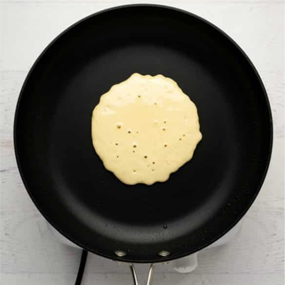

Make Fast and Easy Pancakes
Nothing says "weekend" like homemade pancakes for breakfast.
Our easy recipe will help you whip them up in less than 30 minutes.
Making pancake batter from scratch is so simple that you'll wonder why you
never did it before!
Ingridients:
- 1 cup all-purpose flour, (spooned and leveled)
- 2 tablespoons sugar
- 2 teaspoons baking powder
- 1/2 teaspoon salt
- 1 cup milk
- 2 tablespoons unsalted butter, melted, or vegetable oil
- 1 large egg
- 1 tablespoon vegetable oil
-
Assorted toppings, such as butter, maple syrup, confectioners' sugar,
honey, jams, preserves, sweetened whipped cream, or chocolate syrup
PROCEDURE
-
Preheat oven to 200 degrees; have a baking sheet or heatproof platter
ready to keep cooked pancakes warm in the oven.
In a small bowl,
whisk together flour, sugar, baking powder, and salt; set aside.
- Add egg, oil and milk to the dry mixture
-
whisk until just moistened (do not overmix; a few small lumps are fine).
-
Heat a large skillet (nonstick or cast-iron) or griddle over medium.
Fold a sheet of paper towel in half, and moisten with oil;
carefully rub skillet with oiled paper towel.

-
Cook until surface of pancakes have some bubbles and a few have burst, 1
to 2 minutes.
Flip carefully with a thin spatula, and cook until
browned on the underside, 1 to 2 minutes more.
Transfer to a baking sheet or platter; cover loosely with aluminum foil,
and keep warm in oven.
Continue with more oil and remaining batter.
(You'll have 12 to 15 pancakes.) Serve warm, with desired toppings.